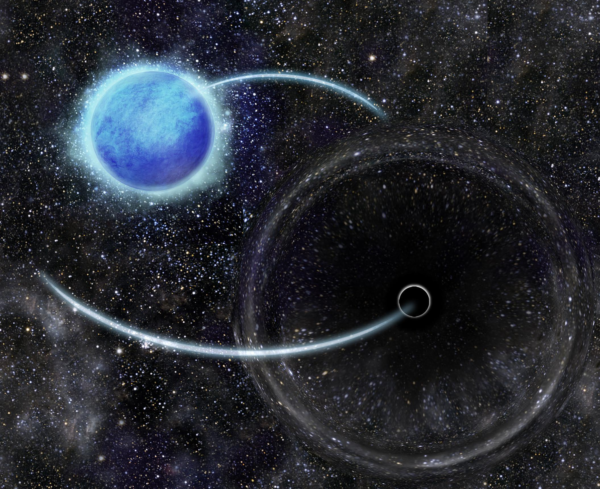

Fantastic beasts and where to find them: the elusive nature of X-ray quiet black holes
With the gravitational wave observations capturing the coalescence of compact objects, hunting for black holes has taken quite a front-row seat in astronomical observations. Here, we discuss two such detection of black holes in orbit with a main sequence companion, and why it is very difficult to find them in the forest of massive stars.
Introduction
Massive stars are objects that are more massive than eight times the mass of our Sun (M⊙). They play an essential role in the evolution of our Universe. They enrich the void between stars with matter via strong winds and provide mechanical feedback. However, many aspects of massive star evolution are still unconstrained, such as their wind mass-loss rates, the mixing efficiency inside their surface, and their death.
Massive stars that are heavier than ~20 M⊙ are thought to collapse directly to form black holes. Expectantly, there are many uncertainties such as the mass range for black hole formation, the natal kick imparted during the black hole formation due to asymmetric collapse, and the spin of the resultant black hole. The gravitational wave detectors have already observed ~90 compact object merger events involving black holes and neutron stars. However, more than a million black holes are predicted to be present in our Galaxy itself, waiting to be discovered. So, observationally detecting a large sample of black holes can shed necessary light on their formation properties and their subsequent evolution.
Empirically, massive stars have been observed to exist in binaries and higher order multiples, with about three out of every 100 massive star binary above 10M⊙ expected to harbour a black hole as its companion. However, a large fraction of these binaries that will eventually form double compact object binaries will not merge within the current age of our Universe. Hence, they will remain unobservable in the current gravitational wave surveys. Nevertheless, progress can be made to discover these black holes while they are in orbit with a massive star companion, where they are detectable via alternative methods. This is possible, for example, by measuring the X-ray emission from the accretion disk of the black hole, the radial velocity variations in the spectral lines1 of the massive main sequence companion, and through periodic astrometric variations2 or photometric variability3 of the massive star companion induced by the black hole.
Results
Black holes in binaries are thought to form from the collapse of massive Wolf-Rayet stars, which are very hot and bright stars that show emission lines in their spectrum. Now, there are many observed Wolf-Rayet+O star binaries in our Galaxy (~80) compared to observed black hole+O star binaries (only one, Cyg X-1). To resolve this disparity, it was recently suggested that black holes receive a significant natal kick when the Wolf-Rayet stars collapse to form a black hole, disrupting the binary.
Since black holes do not emit any light of their own, we need to rely on the indirect ways discussed above to observe a black hole. The most common method has been to detect X-rays from the accretion disk around the black hole in a binary with the O star companion. Some of the wind matter from the companion gets attracted by the gravity of the black hole, and if that matter falling into it has enough angular momentum, it can form a disk before being engulfed by the black hole. The matter then swirls around the black hole multiple times, gets heated up to millions of degrees, and gets hot enough to emit X-rays. Bondi, Hoyle and Lyttleton did pioneering work in this field in the 1940s.
However, we find that such wind accretion in our black hole+O star binary models is not expected to lead to observable X-ray emission. Only in exceptionally favourable cases, such as high angular momentum accretion efficiency and low wind velocities, can an accretion disk form, leading to observable X-ray emission. Moreover, the formation of an accretion disk is also biased towards binaries containing rapidly spinning black holes.
The first-born black hole in a massive binary is expected to be slowly spinning due to efficient angular momentum transport inside a star. The wind velocity of O stars is very high (~2000 km/s), empirically verified through observations. Detailed hydrodynamic calculations predict only one-third of the angular momentum available is accreted by the black hole. Hence, most black holes in orbit with an O star are not expected to form an accretion disk and remain unobservant via X-ray telescopes. So, the discrepancy in the number of observed Wolf-Rayet+O star binaries in comparison to black hole+O star binaries may be due to the lack of observability of the black hole binaries in X-rays. We conclude that high black hole natal kicks are not necessary to explain the scarcity of observed high-mass X-ray binaries. Instead, searching for black holes via alternative methods may be more fruitful.
One alternative would be to search for black holes in our Milky Way via astrometric variations in visible stars - that is, variations in the precise measurements of the position of stars in the sky. This method has been shown to be very promising as our Milky Way is expected to harbour millions of black holes in orbit with main sequence companions whose astrometry can be carried out in principle by the GAIA telescope. Unfortunately, the GAIA Data Release 3 did not have the relevant data for stars massive enough to host black holes, and hence this method could not be pursued.
Thus in this work, we look at radial velocity variations of observed massive stars. We have a nearly complete census of the massive star content in the Tarantula nebula of Large Magellanic Cloud, which enables us to also carry out precise number statistics for the massive stars in this region. In fact, it is the most active star-forming region known in the Local Group of galaxies containing very massive stars with a metallicity resembling the peak of star formation in our Universe. The radial velocity of stars is measured by observing the Doppler shift in a prominent spectral line of the star. As the star moves around in one full orbit, the spectral lines are blue-shifted for half of the orbit and red-shifted for the remaining orbit.
When we see a Doppler shift in a spectral line of a stellar object both towards the bluer and redder wavelengths simultaneously, we identify the object as a double-lined spectroscopic binary. This is because both the components of the binary are responsible for creating the Doppler shifts in opposite directions, one moving towards us in orbit and the other away from us. When we see a Doppler shift in only one direction, we identify the object as a single-lined spectroscopic binary. This is because the companion star is usually too faint for its spectral line to be detected. Or, in the most interesting case, the companion is a compact object which does not emit any light of its own.
We identify the single-lined spectroscopic binaries in the sample of massive stars observed in the Tarantula region. The VLT Flames Tarantula Survey observed approximately 800 massive stars, out of which 300 were O-type stars. From these, around 100 targets that showed radial velocity variations were followed up in the Tarantula Massive Binary Monitoring Survey. Of these, 51 of them were categorised as single-lined spectroscopic binaries. Through follow-up spectral disentangling, we retrieved hidden spectra in 43 of these targets. For the remaining targets where we were not able to find a non-degenerate companion, three of them had an estimated minimum mass of the unseen companion above 4M⊙.

Fig. 1 : Visualisation of the BH+O star binary VFTS 243, a 10.4 d-period binary with a (near-)circular orbit situated in the Tarantula nebula in the Large Magellanic Cloud (credit: Isca Mayo / Sara Pinilla). The sizes of the star, black hole, and orbits are not to scale.
Of the above, we were able to find unambiguous evidence for the presence of a 9.1M⊙ object in the system named VFTS 243. The orbital period of this system is 10.4 days and the orbit is also circular. Through follow-up rigorous analysis, we arrive at the conclusion that the object is a black hole, the first one detected in the Large Magellanic Cloud. The system is also X-ray quiet, in agreement with our earlier study on the X-ray emission from black hole + main sequence systems. The above number statistics show how big an observing program needs to be undertaken to unambiguously find black holes via radial velocity monitoring of observed massive stars. In the Milky Way, we have found another system, HD 130298, that could be another candidate to host a stellar-mass black hole. Our journey towards identifying a population of X-ray quiet black holes has only started, and we aim to slowly but surely hunt them down, through future observational surveys, one black hole at a time.